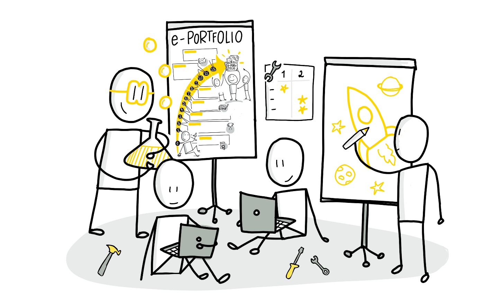

Learning area 3 - ePortfolio tools
Learning area 3 - ePortfolio tools
Selection of ePortfolio tool and further development of the topic (weeks 4-5)
Structure:
Week 4
A) Present possible further development of the topic B) Have a look on the curated ePortfolio tool list and exchange possible experiences with a tool C) Distribution among the circle members (each one a tool for a closer look)
Week 5
D) Presentation of the tool findings by means of a tool arena E) Exchange pros and cons in the group F) Decide (at the meeting or during the week) which tool you want to use for your ePortfolio and why

Week 4 - Variety of tools
A) Present possible further development of the topic | (approx. 15 Minuten)
In this week you should complete your subject / topic of interest in the first glance and reach a finalized first version for you. You can use the time together in the circle to present the last developments or adjustments based on the received feedback to the others. You dont have to do that this time but you can also ask the others to look at your final version during the week. Surely some of you will have an idea that might be discussed in the circle.
If applicable ask yourself the following question: What do you think are the basic characteristics of a good ePortfolio and what basic functionalities should it have? (see also Basics)
B) Have a look on the curated ePortfolio tool list and exchange possible experiences with a tool | (approx. 25 minutes)
Have a look at the following list of recommendations and exchange ideas about who already knows which tool or has first experiences with it.
Top 10 list of recommended ePortfolio tools by the guide authors (in any order)
-
Padlet -- simple, quick to set up pinboard with different pre-configured designs and formats. Very comfortable to use and to share and collaborative fillable. 3 padlets are free per user. Simple tool, very popular also e.g. for schools.
-
Mahara -- probably the most established ePortfolio tool, especially popular in schools and universities. Free for educational institutions up to 100 persons. Wide range of functions with portfolio (views, file collection, learning diaries), groups, forums, profile with learning goals and plans.
-
Wordpress -- One of the best known Open Source CMS systems which is used very successfully for weblogs and homepages. With many themes and add-ons. Good and comfortable to use.
-
PebblePad - commercial ePortfolio tool with extensive functionality, customizable templates and external app integrations
-
OneNote - Standard tool from Microsoft which can be licensed either freely (up to 5GB of data) or commercially via educational and business licenses. Very popular in school environments where it can already be used in digital lessons (cloud technology). Very flexible in use and is constantly being expanded and improved. Can be integrated into the Office 365 ecosystem.
-
Connections - Enterprise social networking platform from HCL (formerly provided by IBM) which promotes the transparent preparation and design of an ePortfolio via an internal community concept with blog, wiki and forum module
-
LinkedIn / Xing as ePortfolio online profile tools with social networking focus to present yourself professionally and exchange information with other network members
-
Twitter as network-based microblogging tool to present short information and helpful links and to exchange with other followers via hashtags
-
Combined version of OneNote and Connections (internal company solution)
-
Combined version of Wordpress, Twitter and LinkedIn / Xing (external solution)
We especially recommend that you also think about possible tool combinations. Because from a functional point of view they can offer the most added value when creating and publishing your contributions.
C) Distribution among the circle members (each one a tool for a closer look | (approx. 20 Minuten)
Decide together who would like to take a closer look at which tool in the course of the week. Choose one tool at a time and think about the first criteria that would be especially important for you to be able to give an assessment of the usability as an ePortfolio. It might also make sense to split up according to the tool combinations recommended at the end of the list and then collect the analyses by the following week.
Basic kata for this week (approx. 1 hour):
Select an ePortfolio tool from the orientation list and experiment with it until the following week, when you briefly introduce it to the others. Below you will find a small tool template that you can use as an orientation and fill out to present it to your Circle members next week. Helpful criteria can be, for example, user-friendliness (usability) and click paths, possible costs, suitable application scenarios as well as dialogue and feedback possibilities.
+-------------+-----------------+-----------------+-----------------+ | Tool | Description | + good / - | My | | | and criteria | bad | r | | | | | ecommendation | +=============+=================+=================+=================+ | Example: | Mix of videos | + comfortable | I would use | | Microsoft | and screenshots | embedding of | the tool to | | OneNote | that I have | media (videos, | work out topics | | | embedded in my | wakelet, office | for myself. I | | | text. Various | etc.) | would share the | | | thematically | | notebooks in | | | different | + structuring | small groups | | | notebooks | easily | and develop | | | Topic: Learning | possible | them further | | | hacks | | with my | | | | - unwieldy for | colleagues. | | | | larger groups | | | | | (compared to | | | | | blog etc.) | | +-------------+-----------------+-----------------+-----------------+ | ... | ... | ... | ... | +-------------+-----------------+-----------------+-----------------+ | | | | | +-------------+-----------------+-----------------+-----------------+
Advanced kata (approx. 1 to 2 hours): Make a comparative tool analysis for two of your favorite tools which you then present to the others. This way you can make a better decision together. As an orientation guide the preparation with regard to the 8C-model for collaborative technologies from Susan Williams (2011) can serve here (see also the following PDF).
Week 5 - Tool selection
D) Presentation of the tool findings by means of a tool arena | (approx. 25 minutes)
Present your findings about the tools you tried out to each other today.
Our recommendation: Compare about five essential core functions of the respective ePortfolio tool which you will compete with each other in the circle. Which one offers which advantages? This will give you a quick insight into the variety of tools.
E) Exchange pros and cons in the group | (approx. 25 minutes)
During the arena rounds please exchange which pros and cons there are for which ePortfolio tool and keep them in a comparison (e.g. as a table).
F) Decide at the meeting or during the week which tool you want to use for your ePortfolio and why | (approx 10 minutes)
Try to make a decision during the circle meeting as to which ePortfolio tool or combination is most suitable for you and share it with the others. If you are still a bit uncertain you can continue to think about it during the week and use the recommendations of the others to get clarity for yourself. In any case, please let the others know which tool or combination you have chosen. This doesnt have to be final but it is important for the beginning to be able to get started.
Basic kata for this week (approx. 1 hour):
Make the final decision for the ePortfolio tool or tool combination you would like to use from now on. Search for valuable short explanatory videos or links for using your favorite ePortfolio tool and share them online. This can be a good further orientation and decision support for those who are still undecided.
Advanced video kata (approx. 1 to 2 hours):
Create a short recommendation video for the others why you chose your ePortfolio tool or your tool combination.